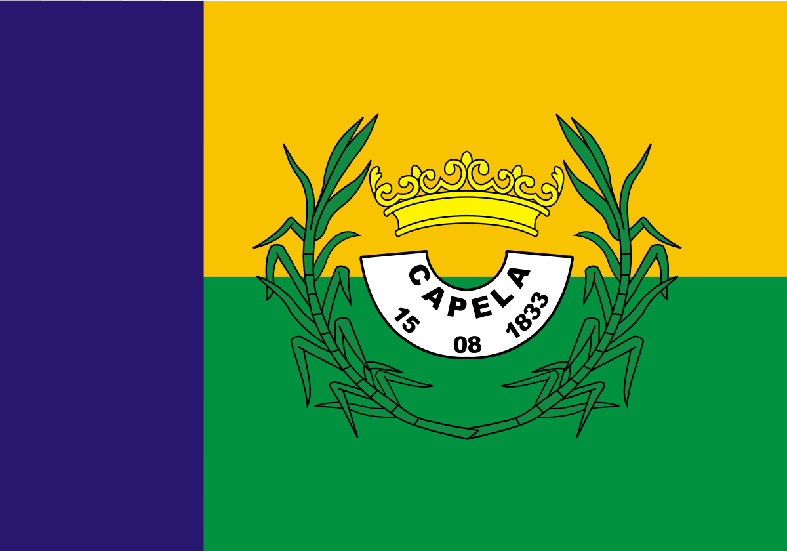

Capela
História
Quando, em princípios do século XVIII, o capitão Luís de Andrade Pacheco e sua mulher, Perpétua de Matos França, fixaram residência em terras situadas entre o rio Japaratuba e a localidade de Coité, já os tupinambás as haviam abandonado, tangidos pela proximidade do homem branco. O sentimento religioso do casal determinou a doação, por escritura lavrada no tabelionato de Santo Amaro das Brotas, da quantia de cem mil réis, destinada à construção de uma capela sob o orago de N. S.ª da Purificação, no sítio denominado Tabuleiro da Cruz, em 1735. Dois anos depois, estava a capela construída. A freqüência de missas e de festejos promovidos pelo padre Luís de Andrade Pacheco, filho dos doadores, atraiu moradores circunvizinhos, que construíram novas casas e ranchos nas proximidades.
O plantio do algodão, a cultura da cana e o açúcar fomentaram o comércio e expandiram a localidade. No princípio do corrente século, o progresso do Município marchava mais vivo com a mecanização de sua indústria açucareira, datando de 1914 a primeira usina de açúcar cristal. Em 1915, o ramal ferroviário Murta-Capela ligou-o aos municípios servidos pela Viação Férrea Federal Leste Brasileiro, inclusive às capitais Aracaju e Salvador, o que, sem dúvida, Ihe propiciou notável desenvolvimento.
O distrito deve sua criação ao Alvará de 9 de fevereiro de 1813. Em virtude da Resolução do Conselho do Govêrno, aprovada pela Lei provincial de 19 de fevereiro de 1835, criou-se o Município, sob a denominação de N. S.ª da Purificação da Capela, com território desmembrado do Têrmo da Vila de Santo Amaro das Brotas. A Lei n.° 1.331, de 28 de agôsto de 1888, concedeu à sede municipal foros de cidade. Até 1954, era composto de um só distrito, quando sofreu reformulação administrativa, pela Lei n.° 554, de 6 de fevereiro, passando a 4: Capela (sede), Barracas, Miranda e Pedras. Atualmente conserva tal composição.
fonte: https://cidades.ibge.gov.br/brasil/se/capela/historicoPontos Turísticos
Festa de São Pedro
Atualmente, Capela é famosa pela sua Festa de São Pedro, onde centenas de foliões buscam nas matas próximas à cidade e erguem numa das praças um "mastro", árvore escolhida para levar em seus galhos superiores prêmios que serão posteriormente disputados em meio a uma "guerra" de rojões. Estes prêmios são ofertados pelo comércio local, sendo captados no evento conhecido como "Sarandaia", que ocorre no 1º dia do mês de junho, quando um habitante local, travestido de "baiana", passa de porta em porta acompanhado por banda de pífanos e foliões.
Ao cair da noite, uma imensa fogueira é acessa aos pés do mastro e, enquanto este queima, é travada uma "guerra de espadas", "busca-pés" e "limalhas", todos derivações de rojões. Assim que o mastro cai os "combatentes" se lançam sobre ele à cata dos tais prêmios.
Outra diversão para os moradores da cidade é a "bica", nascedouro de águas límpidas e gélidas, localizada numa belíssima área de mata protegida.
Dados Gerais de acordo com o IBGE
| Prefeito (a) | Silvany Yanina Mamlak |
| Vice-Prefeito (a) | Antônio Arimatea Rosa Filho |
| Site do município | https://capela.se.gov.br/index |
| Área territorial | 442,211 km² |
| População estimada | 34.808 pessoas |
| Densidade demográfica | 69,48 hab/km² |
| IDHM | 0,615 |
| PIB per capita | R$ 11.393,56 |